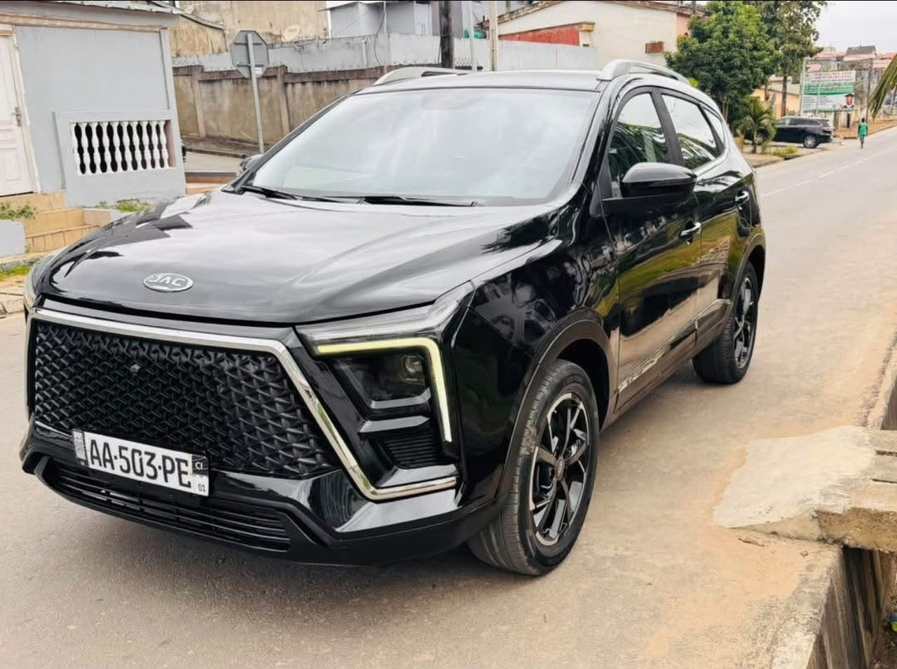

Bonne occasion
JAC JS5 2024
2024 · Essence · Automatique · Full options
8 800 000 FCFA
Légèrement négociable
Année2024
CarburantEssence
Moteur4 cylindres
BoîteAutomatique
DémarrageBouton Start
Caméra360°
ÉcranGrand écran
ToitOuvrant
IntérieurCuir
DocumentsPapiers à jour
Véhicule propre, full options : démarrage par bouton Start, caméra 360°, grand écran, toit ouvrant et intérieur cuir. Tous les papiers sont à jour selon le vendeur. Prix légèrement négociable.
Disponibilité, kilométrage, équipements et documents à confirmer avec le propriétaire lors de la visite.